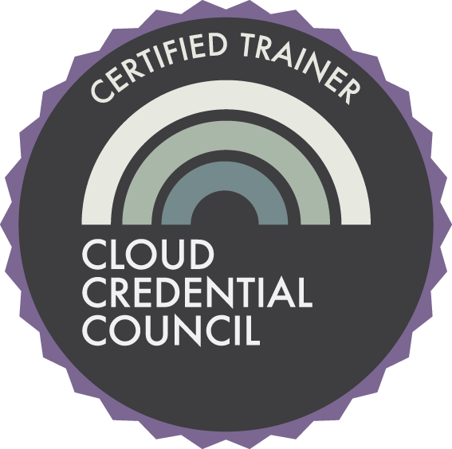

Laat u certificeren door de belangrijkste industriegroep en maak cloud computing veiliger

De volgende trainingen zijn te vinden in de kalender.
Cloud computing ontwikkelt zich in een razend tempo. Maar is het voldoende veilig? De flexibiliteit leidt tot grote voordelen voor organisaties. Maar afhankelijk worden van een externe dienstverlener gaat met onbekende risico’s gepaard. Tegelijkertijd merkt u wellicht dat cloud-toepassingen het bedrijf binnen worden gehaald, zonder dat voldoende over de voordelen en risico’s is nagedacht.
Diepgaande kennis van cloud computing is schaars. En een helder beeld van de security consequenties is nog schaarser. Het is makkelijk om NSA te noemen, maar er zijn belangrijkere risico’s om zorgen over te hebben. Dat zijn de risico’s die een project in gevaar kunnen brengen, de reputatie van een bedrijf, of de carrière van een IT-expert. Expertise in cloud computing is moeilijk te krijgen en moeilijk te herkennen.
Herkent u een of meer van de volgende vragen?
- Wat moet onze cloud provider doen? En wat is dan onze taak?
- Hoe wordt cloud computing voor ons van nut?
- Welke servicemodellen zijn voor ons het beste?
De meeste van deze problemen zijn het gevolg van de onvolwassen fase waarin cloud computing zich nog steeds bevindt. Providers proberen zo snel mogelijk naar de markt te gaan, waarbij ze hun bestaande producten en diensten “cloud washen”. Wat kunnen we doen? Hoe kunnen we ervoor zorgen dat u een volledig leveranciersonafhankelijk begrip heeft van cloud computing?
Training

Gelukkig is er een onafhankelijke training en certificering voor cloud security-kennis. De Cloud Security Alliance (CSA) is een internationale non-profitorganisatie gericht op betere cloud computing security. De CSA heeft een catalogus van best practices samengesteld die breed is geadopteerd. Het ‘Certificate of Cloud Security Knowledge (CCSK)’ toont aan dat een individu succesvol een toets heeft doorstaan over de belangrijkste concepten in deze catalogus. Dit is de eerste leveranciersonafhankelijke certificering voor cloud computing security kennis.
Met mijn hands-on training krijgt u een fundamenteel en praktisch inzicht in cloud computing security, waarmee u zich vlot kunt voorbereiden op het online examen.
Voor de volgende training zie de kalender.
Klik hier voor de volledige beschrijving van de inhoud van de training.
Begrijp Cloud Security
Een helder inzicht in de security uitdagingen rondom cloud computing zal u in staat stellen om cloud computing beter in te zetten. Naarmate u de risico’s beter begrijpt, bent u meer in staat om ze af te handelen of te ontwijken. “Met betere remmen kunt u sneller rijden”. Dezelfde inzichten werken ook om gevaarlijke vergissingen te voorkomen.
Traditionele IT-beveiliging draait om het beschermen van de technische infrastructuur, zoals servers en netwerken. Dat voldeed een tijd, maar is nu niet meer genoeg. Het is nodig om aandacht te besteden aan:
- Beveiliging van de infrastructuur met daarbij inbegrepen het ‘management plane’
- Meenemen van governance en compliance overwegingen
- Beveiligen van data over de hele levenscyclus
- Beveiligen van applicaties
- Beveiligen van gebruikers en hun rechten
Een beter begrip van de risico’s en voordelen van cloud computing stellen u in staat om betere oplossingen te definiëren. Zoals een verkoopmanager van een cloud provider na een van mijn CCSK-cursussen zei: “ Ik kan nu betere offertes maken voor onze klanten”.
Een helder bewijs van de cloud security-expertise van uw medewerkers maakt het eenvoudiger om de juiste mensen op het juiste project te zetten.
~ Brian Bourne, Principal, SmarTech, Toronto
~ Marco Rijkers, Platform manager, Aegon Insurance
~ Tariq Elsadik, Abu Dhabi
~ Daniele Catteddu, Managing Director EMEA, Cloud Security Alliance
Veiligere clouds
Cloud computing heeft een groot potentieel, maar levert ook nieuwe risico’s. Na de CCSK-training zal het potentieel veel bereikbaarder zijn en de risico’s meer vermijdbaar.
Voor sommige geregistreerde professionals kan het bijwonen van de CCSK-training meetellen voor het halen van voldoende professionele educatie (PE) punten.
Dr. Peter van Eijk
Coach, trainer, spreker en schrijver op het gebied van cloud computing en andere digitale infrastructuren.
Uw trainer
Dr. Peter H.J. van Eijk is een van ’s werelds meest ervaren onafhankelijke cloud-trainers. Hij is door de CSA gecertificeerd om CCSK versie 4 trainingen te leveren. En door de Cloud Credential Council voor het leveren van CompTIA Cloud Essentials en Virtualization Essentials. Hij is de auteur van de ITpreneurs Cloud Essentials cursus en leverde een bijdrage aan de Virtualization Essentials cursus. Hij geeft deze trainingen over de hele wereld.
Daniele Catteddu, Managing Director EMEA, Cloud Security Alliance:
“Peter is a very experienced cloud trainer and we have enthusiastic feedback from his CCSK students.”
Volgende training
Voor de volgende training zie de kalender.
Wij raden u aan de aanbevolen voorkennis door te nemen. Kijkt u voor de training ook nog even naar de technische vereisten. Deelnemers aan de training krijgen ook gratis toegang tot het besloten deel van www.clubcloudcomputing.com. Hier vindt u waardevolle oefenexamens en andere informatie over het CCSK-examen.